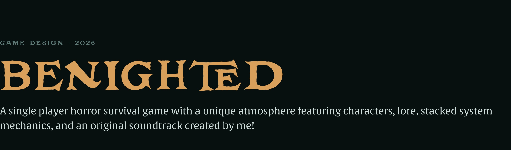
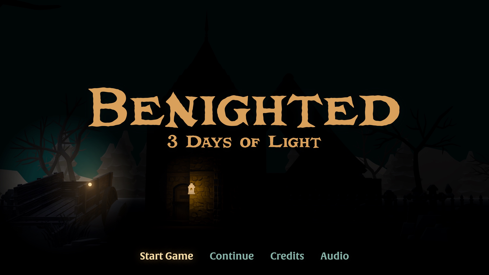
PlayOpens the game on its own page · keyboard · about 12MB
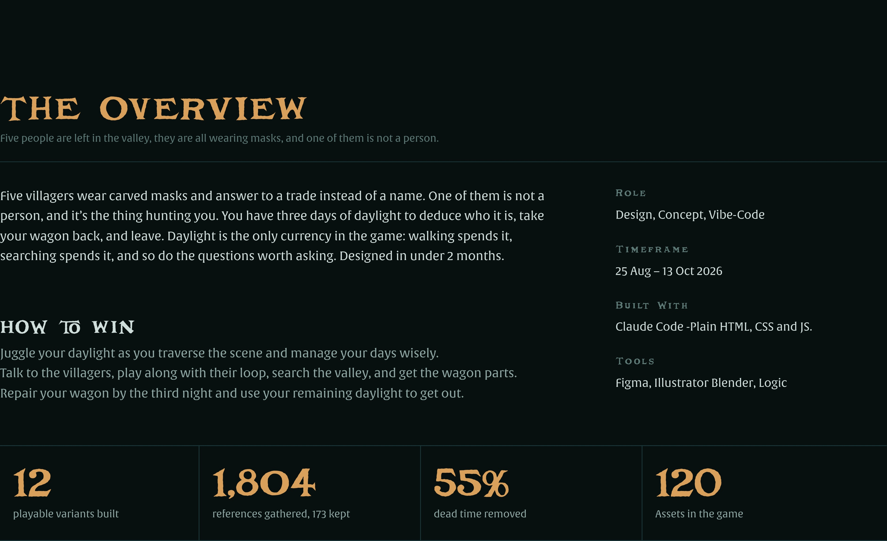
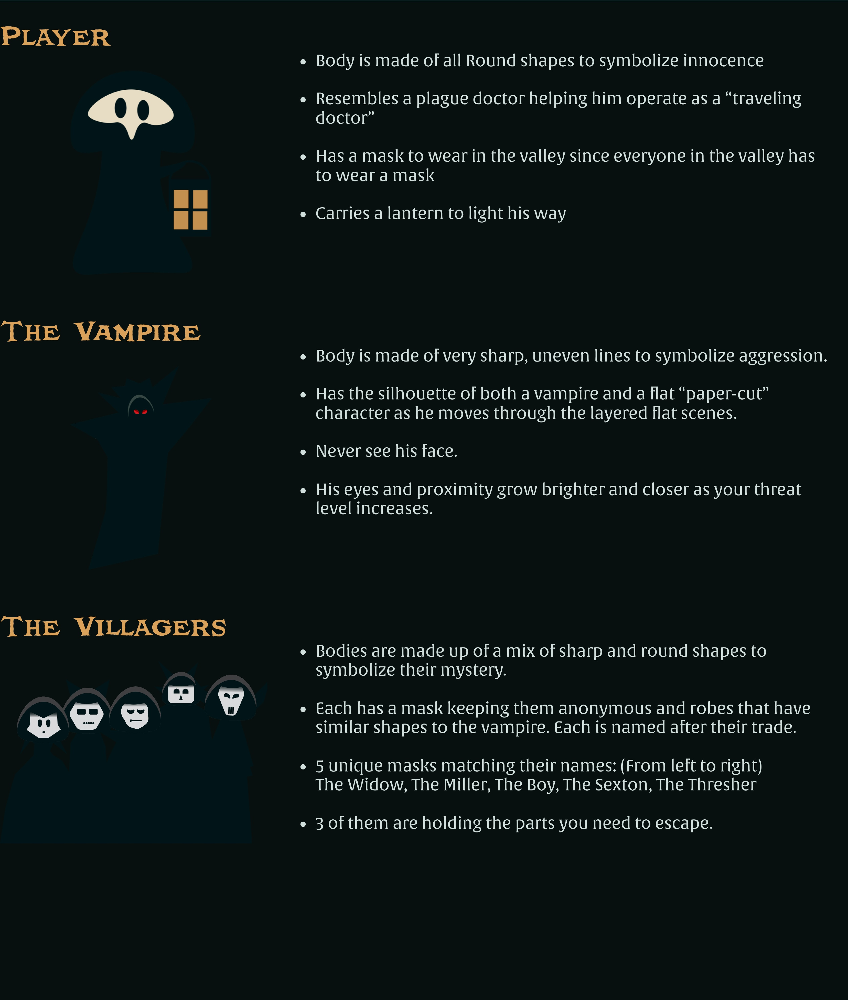
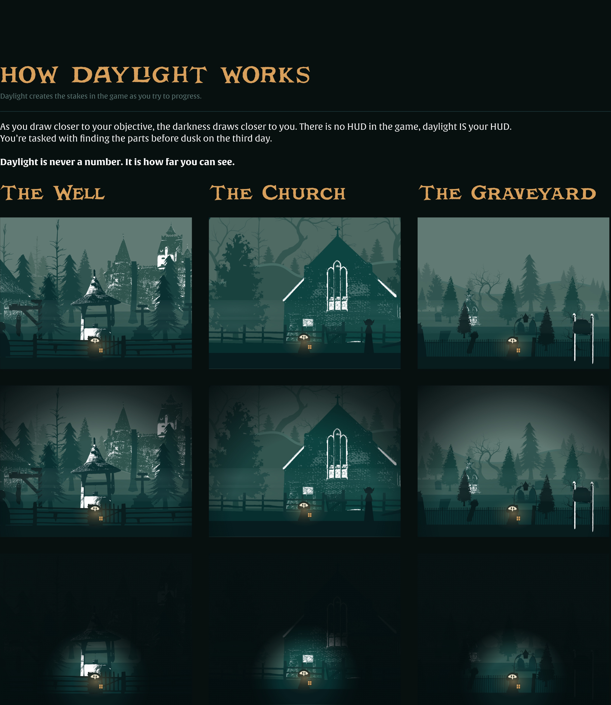
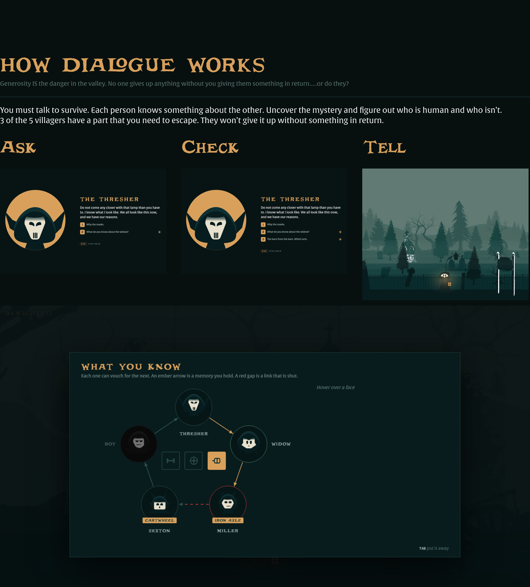
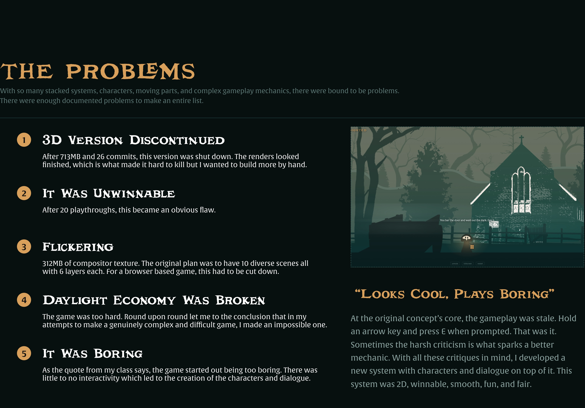
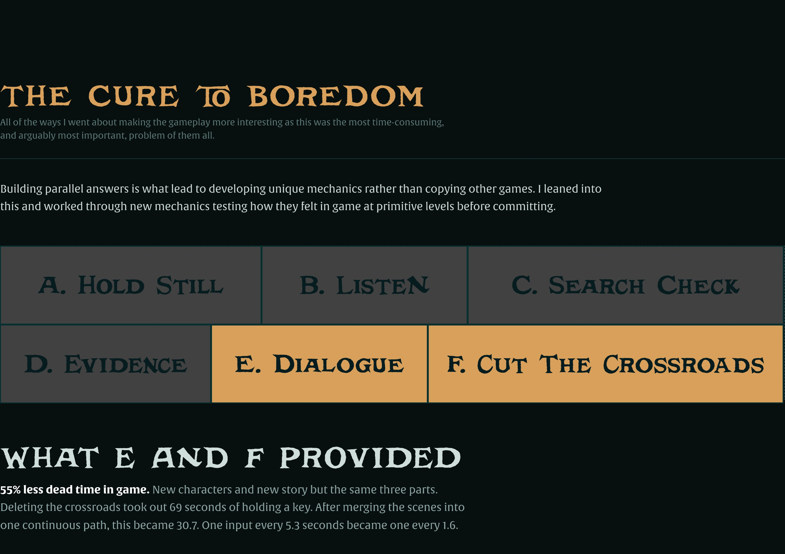
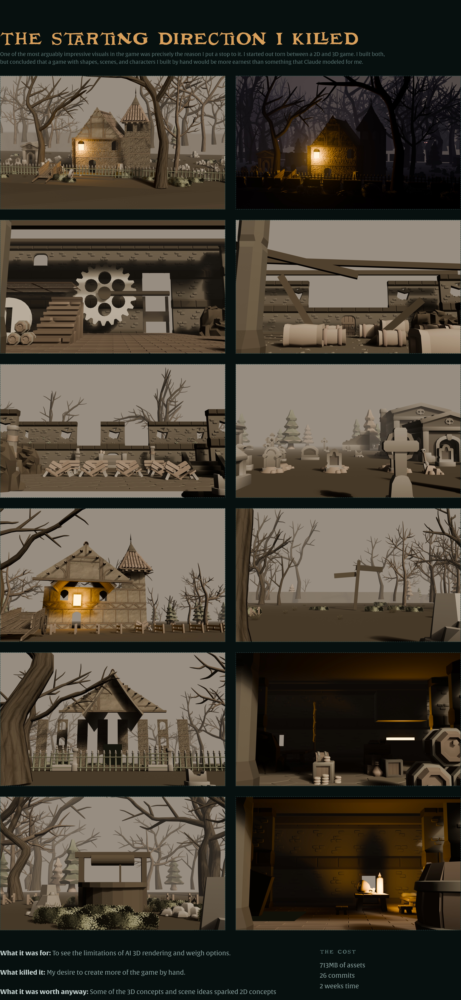
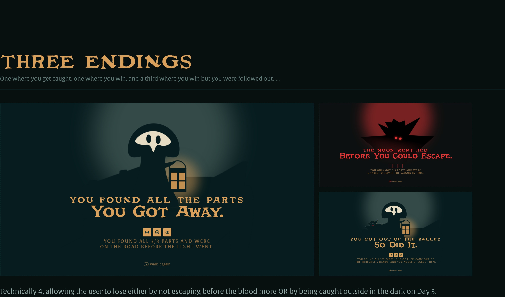
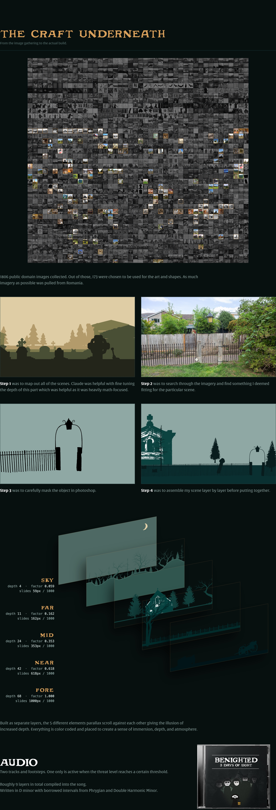
The soundtrack
Both tracks were written and recorded for the game, and both are running at once the whole time you play. The mix is the game: the bed is always there, and the tension layer sits at silence underneath it until the light starts to go or the thing reaches the near plane.
Under everything, from the title screen to the last frame. It ducks to almost nothing when the ambience drops, which is the game's tell that something has changed rather than a sting telling you so.
Never started and never stopped — it has been playing silently since the title screen and is only ever faded up, so the player never hears the game make a decision. It rises through the last third of a day and goes straight to full when the thing is at the edge of the light.
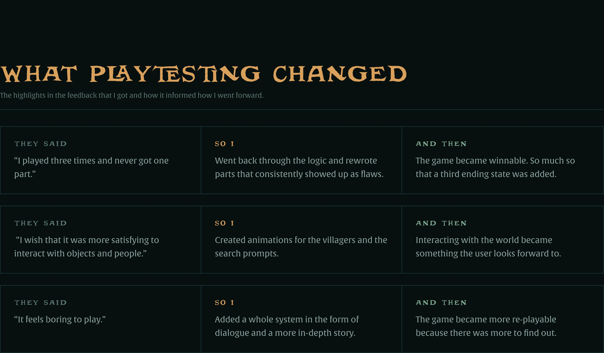
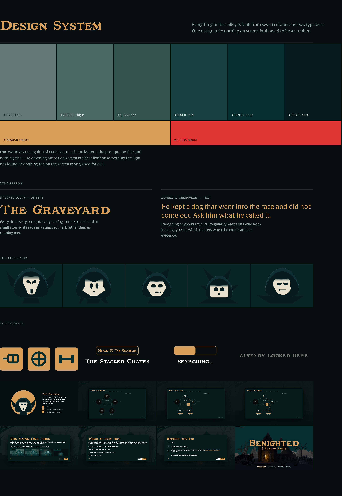
The system, moving
The same parts, in motion. Built in Figma and exported as an animated SVG, so what is on this page is vector the whole way down rather than a recording of it.
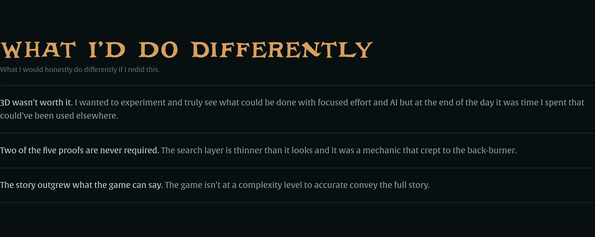